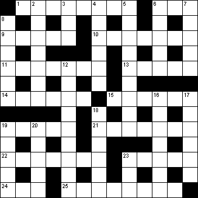

|
|
Daily Quick Crossword
14 October

|
Across 1 Roomy (8)6 Droop (3) 9 Ahead of schedule (5) 10 Vast (7) 11 Deep red (7) 13 Military trainee (5) 14 Remove, separate (6) 15 Aeroplane journey (6) 19 Sudden alarm (5) 21 Vanquish (7) 22 Sweet dish named after a ballerina (7) 23 Imitate (5) 24 Secret agent (3) 25 Merriment (8) |
Down 2 Persevere (7)3 Shed tears (3) 4 The East (6) 5 Punctuation mark (9) 6 Church council (5) 7 Invited person (5) 8 Fought with swords (6) 12 Penitential attire (9) 16 Epicure (7) 17 Three times (6) 18 Scribble (6) 19 Famous diarist (5) 20 Manual worker (5) 23 Spoil (3) |
|
Copyright © 2020 Simply Daily Puzzles
|